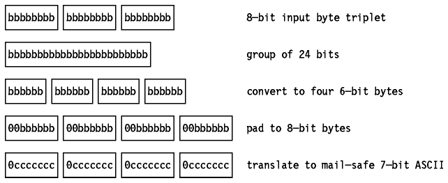
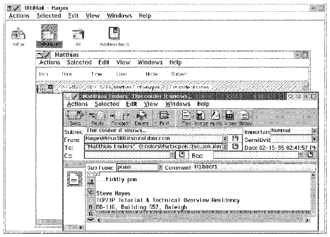

Table of Contents
Table of Contents  SMTP
and X.400
SMTP
and X.400Table of Contents SMTP
and X.400
MIME is a draft standard protocol. Its status is elective.
Electronic mail (as described in Simple Mail Transfer Protocol (SMTP)) is probably the most widely used TCP/IP application. However, SMTP (that is, an STD 10/RFC 821 compliant mailing system) is limited to 7-bit ASCII text with a maximum line length of 1000 characters which results in a number of limitations.
Obviously, this is undesirable since the element is presumably important to the recipient who may be able to view or otherwise use it even though it is not understood by the mailing system. Discarding the element obviously means it is not available to the user. Converting it to ASCII involves clearing the high-order byte, which for non-textual data almost certainly means corruption beyond repair. The problem is particularly acute in the case where both the sender and recipient are on X.400 networks but the mail item passes through an intermediate RFC 822 network (this is termed ``tunnelling'') since the X.400 users would naturally expect to send and receive X.400 mail messages without loss of information.
MIME is a standard which includes mechanisms to solve these problems in a manner which is highly compatible with existing RFC 822 standards. Because mail messages are frequently forwarded through mail gateways, it is not possible for an SMTP client to distinguish between a server which manages the destination mailbox and one which acts as a gateway to another network. Since mail which passes through a gateway may be tunnelled through further gateways, some or all of which may be using a different set of messaging protocols, it is not possible in the general case for a sending SMTP to determine the lowest common denominator capability common to all stages of the route to the destination mailbox. For this reason, MIME assumes the worst: 7-bit ASCII transport which may not strictly conform to or be compatible with RFC 821. It does not define any extensions to RFC 821, but limits itself to extensions within the framework of RFC 822. Thus, a MIME message is one which can be routed through any number of networks which are loosely compliant with RFC 821 or which are capable of transmitting RFC 821 messages.
MIME is a draft standard protocol with a status of elective. It is described in two parts:
The MIME standard was designed with the following general order of priorities:
There are two areas where compatibility with previous standards is not complete.
The preferred encoding mechanism for ``mostly text'' data is such that, at a minimum, it is ``mail-safe'' with any compliant SMTP agent on an ASCII system and at maximum is mail-safe with all known gateways and MTAs. The reason why MIME does not require maximum encoding is that the encoding hampers readability when the mail is transmitted to non-MIME compliant systems.
For the current list of all MIME values, consult STD 2 - Assigned Internet Numbers. The remainder of this chapter describes only the values and types given in RFC 1521.
Because RFC 822 defines the syntax of message headers (and deliberately allows for additions to the set of headers it describes) but not the composition of message bodies, the MIME standard is largely compatible with RFC 822, particularly the RFC 1521 part that defines the structure of message bodies and a set of header fields that are used to describe that structure.
MIME can be seen as a high-level protocol; since it works entirely within the boundaries of STD 10 and STD 11, it does not involve the transport layer (or lower layers) of the protocol stack at all.
A MIME-compliant message must contain a header field with the following verbatim text:
MIME-Version: 1.0
As is the case with RFC 822 headers, the case of MIME header field names is never significant but the case of field values may be, depending on the field name and the context. For the MIME fields described below, the values are case-insensitive unless stated otherwise.
The general syntax for MIME header fields is the same as that for RFC 822, so the following field:
MIME-Version: 1.0 (this is a comment)is valid since parenthetical phrases are treated as comments and ignored.
Five header fields are defined for MIME.
Note: RFC 1521 includes a definition of the term ``body'' as used above and also the terms ``body part'' ``entity'' and ``message''. Unfortunately the four definitions are circular because a general MIME message can recursively contain MIME messages to an arbitrary depth. The simplest example of a body is the body of message as defined by RFC 822.
The first two of these fields are described in more detail in the following sections.
The body of the message is described with a
Content-Type field of the form:
Content-Type: type/subtype ;parameter=value
;parameter=value
The allowable parameters are dependent on the type and subtype. Some type/subtype pairs have no parameters, some have optional ones, some have mandatory ones and some have both. The subtype parameter may not be omitted, but the whole field may be, in which case the default value is text/plain.
There are seven standard content-types:
Content-Type: multipart/mixed; boundary="1995021309105517"The boundary should not appear in any of the parts of the message. It is case-sensitive and consists of 1-70 characters from a set of 75 which are known to be very robust through mail gateways, and it may not end in a space. (The example uses a 16-digit decimal timestamp.) Each encapsulation boundary consists of the boundary value prefixed by a <CRLF> sequence and two hyphens (for compatibility with RFC 934). The final boundary which marks the end of the last part also has a suffix of two hyphens. Within each part there is a MIME header, which like ordinary mail headers is terminated by the sequence <CRLF><CRLF> but which may be blank. The header fields define the content of the encapsulated message.
Four subtypes are defined:
An example of a complex multipart message is shown in
Figure - A Complex Multipart Example.
Note: ``rfc822'' refers to the syntax of the encapsulated message
envelopes and does not preclude MIME messages for example.
Note: It is explicitly permitted to fragment a message/partial
message further. This allows mail gateways to freely fragment messages in order
to ensure that all parts are small enough to be transmitted. If this were not
the case, the mail agent performing the fragmentation would have to know the
smallest maximum size limit that the mail items would encounter en route to the
destination.
Two subtypes are defined initially:
Security Issues: Although PostScript is often thought of as a format
for printer data, it is a programming language and the use of a PostScript
interpreter to process application/PostScript types poses serious security
problems. Any mail reader which automatically interprets PostScript programs
is equivalent, in principle, to one which automatically runs executable
programs it receives. RFC 1521 outlines the issues involved.
Implementations are recommended to offer the user the option of using the
data as input to a user program or of storing it in a file (there is no
standard for the default name of such a file, although RFC 1521 does mention a
``Content-Disposition:'' field to be defined in a later RFC.
Security Issues: RFC strongly recommends against an implementation
executing an application/octet-stream part automatically or using it as input
to a program specified in the mail header. To do so would expose the receiving
system to serious security risks and could impact the integrity of any networks
that the system is connected to.
MIME-Version: 1.0
From: Steve Hayes <steve@hayessj.bedfont.uk.ibm.com>
To: Matthias Enders <enders@itso180.itso.ral.ibm.com>
Subject: Multipart message
Content-type: multipart/mixed; boundary="1995021309105517"
This section is called the preamble. It is after the header but before the
first boundary. Mail readers which understand multipart messages must
ignore this.
--1995021309105517
The first part. There is no header, so this is text/plain with
charset=us-ascii by default. The immediately preceding <CRLF> is part of
the <CRLF><CRLF> sequence that ends the null header. The one at the end is
part of the next boundary, so this part consists of five lines of text with
four <CRLF>s.
--1995021309105517
Content-type: text/plain; charset=us-ascii
Comments: this header explicitly states the defaults
One line of text this time, but it ends in a line break.
--1995021309105517
Content-Type: multipart/alternative; boundary=_
Comments: An encapsulated multipart message!
Again, this preamble is ignored. The multipart body contains a still image
and a video image encoded in Base64. See
Base64 Encoding
One feature is that the character "_" which is allowed in multipart
boundaries never occurs in Base64 encoding so we can use a very simple
boundary!
--_
Content-type: text/plain
This message contains images which cannot be displayed at your terminal.
This is a shame because they're very nice.
--_
Content-type: image/jpeg
Content-transfer-encoding: base64
Comments: This photograph is to be shown if the user's system cannot display
MPEG videos. Only part of the data is shown in this book because
the reader is unlikely to be wearing MIME-compliant spectacles.
Qk1OAAAAAAAAAE4EAABAAAAAQAEAAPAAAAABAAgAAAAAAAAAAAAAAAAAAAAAAAABAAAAAQAAAAAA
AAAAAAAAAAAAAAAAAAAAAAB4VjQSAAAAAAAAgAAAkgAAAJKAAKoAAACqAIAAqpIAAMHBwQDJyckA
/9uqAKpJAAD/SQAAAG0AAFVtAACqbQAA/20AAAAkAABVkgAAqiQAAP+SAAAAtgAAVbYAAKq2AAD/
<base64 data continues for another 1365 lines>
--_
Content-type: video/mpeg
Content-transfer-encoding: base64
AAABswoAeBn//+CEAAABsgAAAOgAAAG4AAAAAAAAAQAAT/////wAAAGy//8AAAEBQ/ZlIwwBGWCX
+pqMiJQDjAKywS/1NRrtXcTCLgzVQymqqHAf0sL1sMgMq4SWLCwOTYRdgyAyrhNYsLhhF3DLjAGg
BdwDXBv3yMV8/4tzrp3zsAWIGAJg1IBKTeFFI2IsgutIdfuSaAGCTsBVnWdz8afdMMAMgKgMEkPE
<base64 data continues for another 1839 lines>
--_--
That was the end of the nested multipart message. This is the epilogue.
Like the preamble it is ignored.
--1995021309105517--
And that was the end of the main multipart message. That's all folks!
Figure: A Complex Multipart Example
The original message is always a message according to RFC 822 rules. The first
part is syntactically equivalent to a message/rfc822 message (that is the body
itself contains message headers), and the subsequent parts are syntactically
equivalent to text/plain messages. When re-building the message, the RFC 822
header fields are taken from the top-level message, not from the enclosed
message, with the exception of those fields which cannot be copied from the
inner message to the outer when fragmentation is performed (for example, the
``Content-Type:'' field).
When the external object has been received, the desired message is obtained by
appending the object to the message header encapsulated within the body of the
message/external-body message. This encapsulated message header defines how
the resulting message is to be interpreted (it is required to have a
``Content-ID:'' and will normally have a ``Content-Type:'' field). The
encapsulated message body is not used (the real message body is elsewhere,
after all) and it is therefore termed the ``phantom body''. There is one
exception to this: if the access-type is mail-server the phantom body contains
the mail server commands necessary to extract the real message body. This is
because mail server syntaxes vary widely and so it is much simpler to use the
otherwise redundant phantom body than to codify a syntax for encoding arbitrary
mail server commands as parameters on the ``Content-Type:'' field.
Obviously, there are many types of data which do not fit into any of the subtypes above. Co-operating mail programs may, in keeping with the rules of RFC 822, use types and/or subtypes beginning with ``X-'' as private values. No other values are permitted unless they have first been registered with the Internet Assigned Numbers Authority (IANA). See RFC 1590 for more details. The intention is that few, if any, additional types will be needed, but that many subtypes will be added to the set.
As already noted, SMTP agents and mail gateways can severely constrain the contents of mail messages which can be transmitted safely. The MIME types described above list a rich set of different types of object which can be included in mail messages and the majority of these do not fall within these constraints. Therefore, it is necessary to encode data of these types in a fashion which can be transmitted, and to decode them on receipt. RFC 1521 defines two forms of encoding which are mail safe. The reason for two forms rather than one is that it is not possible, given the small set of characters known to be mail safe, to devise a form which can both encode text data with minimal impact to the readability of the text and yet can encode binary data which consists of characters distributed randomly across all 256 byte values compactly enough to be practical.
These two encodings are used only for bodies and not for headers. Header encoding is described in Using Non-ASCII Characters in Message Headers. The Content-Transfer-Encoding: field defines the encoding used. Although cumbersome, this field name emphasizes that the encoding is a feature of the transport process and not an intrinsic property of the object being mailed. Although there are only two encodings defined, this field can take on five values (as usual, the values are case insensitive). Three of the values actually specify that no encoding has been done; where they differ is that they imply different reasons why this is the case. This is a subtle but important point. MIME is not restricted to SMTP as a transport agent, despite the prevalence of (broadly) SMTP-compliant mail systems on the Internet. It therefore allows a mail agent to transmit data which is not mail-safe by the standards of SMTP (that is STD 10/RFC 821). If such a mail item reaches a gateway to a more restrictive system, the ``encoding'' mechanism specified allows the gateway to decide on an item-by-item basis whether the body must be encoded to be transmitted safely.
The five ``encodings'' are:
7bit ``encoding'' means that no encoding has been done and the body consists of lines of ASCII text with a length of not greater than 1000 characters. It is therefore known to be mail-safe with any mail system that strictly conforms with STD 10/RFC 821. This is the default, since these are the restrictions which apply to pre-MIME STD 11/RFC 822 messages.
Note: 7bit encoding does not guarantee that the contents are truly mail safe for two reasons. First, gateways to EBCDIC networks have a smaller set of mail-safe characters, and secondly because of the many non-conforming SMTP implementations. The Quoted-Printable encoding is designed to overcome these difficulties for text data.
8bit ``encoding'' implies that lines are short enough for SMTP transport, but that there may be non-ASCII characters (that is, octets with the high-order bit set). Where SMTP agents support the SMTP Service Extension for 8bit-MIMEtransport, described in RFC 1652, 8bit encoding is possible. Otherwise, SMTP implementations should set the high-order bit to zero, so 8bit encoding is not valid.
Binary ``encoding'' indicates that non-ASCII characters may be present and that the lines may be too long for SMTP transport (that is, there may be sequences of 999 or more characters without a CRLF sequence). There are currently no standards for the transport of unencoded binary data by mail based on the TCP/IP protocol stack, so the only case where it is valid to use binary encoding in a MIME message sent on the Internet or other TCP/IP based network is in the header of an external-body part (see the message/external-body type above). Binary encoding would be valid if MIME were used in conjunction with other mail transport mechanisms, or with a hypothetical SMTP Service Extension which did support long lines.
This is the first of the two ``real'' encodings and it is intended to leave text files largely readable in their encoded form.
This scheme is a compromise between readability, efficiency and robustness. Since rules 1 and 2 use the phrase ``may be encoded'', implementations have a fair degree of latitude on how many characters are ``quoted''. If as few characters are quoted as possible within the scope of the rules, then the encoding will work with well-behaved ASCII SMTP agents. Adding the following set of ASCII characters:
! " # $ @ [ \ ] ^ ` { | } ~
to the list of those to be quoted is adequate for well-behaved EBCDIC gateways.
For total robustness, it is better to quote every character except for
the 73-character set known to be invariant across all gateways, that is the
letters and digits (A-Z, a-z and 0-9) and the following 11 characters:
' ( ) + , - . / : = ?
Note: This invariant list does not even include the SPACE character! For practical purposes, when encoding text files, only a SPACE at the end of a line should be quoted. Otherwise readability is severely impacted.
This encoding is intended for data which does not consist mainly of text
characters. Quoted-printable replaces each non-text character with a 3-byte
sequence which is grossly inefficient for binary data. Base64 encoding works
by treating the input stream as a bit stream, regrouping the bits into shorter
bytes, padding these short bytes to 8 bits and then translating these bytes to
characters which are known to be mail-safe. As noted in the previous section,
there are only 73 safe characters, so the maximum byte length usable is 6 bits
which can be represented by 64 unique characters (hence the name Base64).
Since the input and output are both byte streams, the encoding has to be done
in groups of 24 bits (that is 3 input bytes and 4 output bytes). The process
can be seen as follows:

Figure: Base64 Encoding - How 3 input bytes are converted to 4
output bytes in the Base64 encoding scheme.
The translate table used is called the Base64 Alphabet.

Figure: The Base64 Alphabet
One additional character (the ``='' character) is needed for padding. Because the input is a byte stream which is encoded in 24-bit groups it will be short by zero, 8 or 16 bits, as will the output. If the output is of the correct length, no padding is needed. If the output is 8 bits short, this corresponds to an output quartet of two complete ``bytes'', a ``short byte'' and a missing byte. The short byte is padded with two low-order zero bits. The missing byte is replaced with an ``='' character. If the output is 16 bits short, this corresponds to an output quartet of one complete ``byte'', a ``short byte'' and two missing bytes. The short byte is padded with 6 low-order zero bits. The 2 missing bytes are replaced with an ``='' character. If ``zero characters'' (that is ``A''s) were used, the receiving agent would not be able to tell when decoding the input stream if trailing X'00' characters in the last or last two positions of the output stream were data or padding. With pad characters, the number of ``=''s (0, 1 or 2) gives the length of the input stream modulo 3 (0, 2 or 1 respectively).
The Base64 encoding can be freely translated to and from the binary encoding without ambiguity since both treat the data as an octet-stream. This is also true for the conversion from Quoted-Printable to either of the other two (in the case of the Quoted-Printable to Binary conversion the process can be viewed as involving an intermediate binary encoding) by converting the quoted character sequences to their 8-bit form, deleting the soft line breaks and replacing hard linebreaks with <CRLF> sequences. This is not strictly true of the reverse process since Quoted-Printable is actually a record-based system: there is a semantic difference between a hard line break and an imbedded ``=0D=0A'' sequence (for example when decoding Quoted-Printable on a EBCDIC record-based system such as VM, hard line breaks map to record boundaries but =0D=0A sequences map to X'0D25' sequences).
MIME does not allow nested encodings. Any Content-Type that recursively includes other Content-Type fields (notable the multipart and message types) may not use a Content-Transfer-Encoding other than 7bit, 8bit or binary. All encodings must be done at the innermost level. The purpose of this restriction is to simplify the operation of user mail agents. If nested encodings are not permitted, the structure of the entire message is always visible to the mail agent without the need to decode the outer layer(s) of the message.
This simplification for user mail agents has a price: complexity for gateways. Because a user agent may specify an encoding of 8bit or binary, a gateway to a network where these encodings are not safe must encode the message before passing it to the second network. The obvious solution, to simply encode the message body and to change the ``Content-Transfer-Encoding:'' field, is not allowed for the multipart or message types since it would violate the restriction described above. The gateway must therefore correctly parse the message into its components and re-encode the innermost parts as necessary.
There is one further restriction: messages of type message/partial must always have 7bit encoding (8bit and binary are also disallowed). The reason for this is that if a gateway needs to re-encode a message, it requires the entire message to do so, but the parts of the message may not all be available together (parts may be transmitted serially because the gateway is incapable of storing the entire message at once or they may even be routed independently via different gateways). Therefore message/partial body parts must be mail safe across lowest common denominator networks; that is, they must be 7bit encoded.
All of the mechanisms above refer exclusively to bodies and not to headers. The contents of message headers must be still be coded in US-ASCII. For header fields which include human-readable text, this is not adequate for languages other than English. A mechanism to include national language characters is defined by the second part of MIME (RFC 1522). This mechanism differs from the Quoted-Printable encoding, which would be used in a message body for the following reasons:
The approach used by MIME is to reserve improbable sequences of legal ASCII characters which are not syntactically important in RFC 822 for use with this protocol. Words in headers fields which need national characters are replaced by encoded words which have the form:
=?charset?encoding?word?=where:
The Octopus <octopus@garden.under.the.sea>an encoded word could be used in the ``The Octopus'' section but not in the address part between the ``<'' and the``>''). RFC 1522 specifies precisely where encoded words may be used with reference to the syntax of RFC 822.
A detailed description of MIME can be found in the following RFCs:
As can be seen from the above, MIME, while being flexible enough for many kinds of mail transport, places particular emphasis on body types that are used in multimedia applications (the image, audio and video types). MIME-compliant mailers are provided in the UltiMail family of products.
There are two different UltiMail products. The original version of the the product is UltiMedia Mail/2, providing MIME compliance, a client/server structure, and multimedia capabilities of OS/2 Version 2.1. This was originally announced as an optional kit of TCP/IP V2.0 for OS/2. It is now part of the IBM WorkGroup product. The newer version provides improvements in usability, robustness and function. It is called UltiMail Lite and is included with the OS/2 Warp products. It is intended for single user use while the former, mentioned above, is intended for group users.
Both of them have the same basic structure.
When an item is sent, UltiMail assembles the components of the mail item into a single MIME message and transmits it using SENDMAIL. The server also watches constantly for mail delivered by SENDMAIL. When an incoming mail item is detected, the server converts the mail item to a set of objects which can be understood by the UltiMail client, and if the destination user is connected to the server, it informs the client program that mail has arrived.
The end user works with mail via the client program. This provides an
object-oriented interface which will be familiar to OS/2 WorkPlace Shell users.
The in-basket, folders and address books are represented by icons in the main
UltiMail window. Double-clicking on an icon open a view of the object it
represents. When creating or receiving mail items, a formatted window is
displayed with entry boxes for the header fields, icons representing the parts
in the message, an icon bar for common functions like sending, replying, adding
images and so on. An example session is shown in
Figure - A Sample UltiMail Session.

Figure: A Sample UltiMail Session
UltiMedia Mail/2, the original UltiMail product, supports multiple clients for each server and multiple servers for each clients. The server and client may be on the same system or on separate systems (a TCP socket connection is used in the second case). It supports SMTP but not POP, so the server must be running in order to receive mail. It supports MultiMedia mail using the MMPM/2 component of OS/2.
UltiMail Lite is provided with OS/2 Warp Version 3, in the Internet Connection provided with the BonusPak. In UltiMail Lite, the server and the client components share the same process, and are always run together. In fact the client/server structure of the program is not apparent to the user. UltiMail Lite does not support including video and audio types in mail messages, but does support all of the other MIME types, and will recognize video and audio clips which are included in a mail message but will not display them. In addition it includes a POP3 client for retrieving mail from a POP3 server. When configured to use POP3, UltiMail Lite retrieves the mail from the POP3 server and queues it to itself as though it had arrived directly via SENDMAIL. When using the IBM Internet Access Kit, the POP server is accessed via a SLIP connection. Users of IBM's connections services have mailbox addresses of the form user ID@ibm.net and mail from other users is re-directed to the POP server using MX records in the Domain Name System as described in Addressing Mailboxes on Server Systems.
The version of UltiMail included in IBM WorkGroup is the full-function client/server equivalent of UltiMail Lite. It includes separate client and server components and full multimedia support with MMPM/2.
 Remote
Execution Command Protocol (REXEC)
Remote
Execution Command Protocol (REXEC)